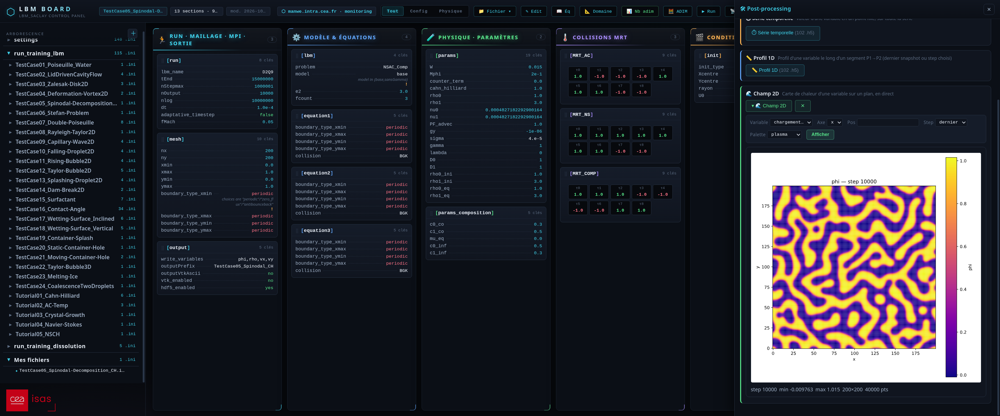

LBM Board: Installation & Launch
LBM_Saclay control panel
The LBM Board is a local web tool (pure Python) to control a full LBM_Saclay workflow in a single page:
Pre-processing — browse and edit the
.iniinput files (diff against a reference case, dimensionless numbers, model documentation);Run — launch a computation on your local CPU, or generate the Slurm submission for the ORCUS GPU partitions;
Monitoring — follow a running computation (log, progress, snapshots);
Post-processing — analyse the
.h5(HDF5) outputs directly in the browser (conservation, time series, 1D profiles, 2D fields).
It binds to 127.0.0.1 only: the server is never exposed on the network, and by default it never writes to your disk (the .ini export is a browser download; the ■ Stop button of the ▶ Run panel is the
only write action, and it only creates a LBMstop file in the case directory to stop the solver cleanly, behind a double confirmation).


Fig. 8 Overview of the LBM Board (LBM_Saclay control panel): kanban view of the .ini input file, computed dimensionless numbers and panels for run, monitoring and post-processing.
1. Prerequisites
The board itself: nothing to install
The board server runs with the Python standard library only — it is
shipped inside the repository (pre-processing/ini_board/), there is
nothing to install to start it.
Optional — HDF5 post-processing: h5py + HDF5
The four 🛠 Post-processing cards (conservation, time series, 1D
profile, 2D field) read the .h5 snapshots of your case, so they
require:
HDF5 outputs enabled in your
.ini(hdf5_enabled = yesin the section[output]), andthe Python library
h5pyon the machine where the board server runs.
On a laptop or personal desktop (Ubuntu), install once with apt:
$ sudo apt install python3-h5py python3-numpy python3-matplotlib
matplotlib is optional: without it the tools still return the CSV
files (no PNG plots). On the CEA clusters (MANWE, ORCUS) h5py is
already available.
If h5py is missing, the board still starts normally: the four
post-processing cards are simply greyed out with a warning.
If python3 does not find h5py although the apt packages are
installed, another Python (virtualenv, conda) shadows the system one:
check with which python3 and use /usr/bin/python3 instead.
2. Start the board
For laptop / desktop
From the root of your clone, one command:
$ cd LBM_Saclay_Rech-Dev $ ./pre-processing/bin/lbm-board.sh
The page <http://127.0.0.1:8092> opens in your browser.
Manage the server:
$ ./pre-processing/bin/lbm-board.sh status # is it running? $ ./pre-processing/bin/lbm-board.sh stop # stop this clone's server
The script is idempotent (one server per clone: re-running it does nothing if yours is already active) and adapts to the machine where it is launched:
Table 3 Machine, role, port and default bases Machine
Role
Port
Default bases
local (CPU)
mixte8092
/home
manwe*
monitor8093
/home+/volatile*
orcus*
monitor9093
/home+/scratch/catB
/tmpformation/LBM_Saclay
Useful options: --role=preproc|monitor|mixte (--role=preproc
hides the ▶ Run panel — pure editing), --port N to force a port.
If the default port is already taken by another instance (another
student’s clone), the script automatically takes the next free port
and displays it.
3. Access the board from a laptop (SSH tunnel)
For MANWE / ORCUS (work in SSH)
The server runs on the cluster, your browser on the laptop, the SSH
tunnel makes the bridge (the bind is 127.0.0.1: the cluster is
never exposed). Two terminals, the example shows MANWE (for ORCUS use
port 9093 — the script displays the correct tunnel line):
# ── Terminal 1 (work terminal, on the cluster) ───────────── $ ssh manwe $ cd <your_clone>/LBM_Saclay_Rech-Dev/pre-processing $ ./bin/lbm-board.sh # server on MANWE (port 8093) # ── Terminal 2 (fresh, always from the laptop) ───────────── $ ssh -L 8093:127.0.0.1:8093 manwe # line displayed by the script
Then open <http://localhost:8093> in your browser. The chip in the top
left corner (⬡ manwe… · monitoring) confirms which machine you are
on.
The ssh -L … command is
launched from the laptop (the browser’s machine), never from the
cluster. Stop: ./bin/lbm-board.sh stop (terminal 1) + Ctrl-C
(terminal 2).
4. Point the board to your .ini files
By default the board loads the case folders of the clone (settings/,
run_training_lbm/, run_training_dissolution/). To add your own
working folders:
Edit the file
pre-processing/ini_board/ini_roots.txt;Add one line:
label+ a tabulation + the path of the folder containing your.inifiles (absolute or relative topre-processing/ini_board/);Reload the page (F5) — no need to restart the server.
mes_cas /home/jdupont/ma_doc/cas_lbm serie_magnetohydro ../../run_training_lbm/serie_magnetohydro
You can also open a single .ini outside the roots with the ＋
button of the page (absolute path); it appears under a « Mes fichiers »
root for the current session.
Next page
Editing the .ini, running a computation (local CPU and ORCUS Slurm),
monitoring and HDF5 post-processing are documented in
LBM Board: Editing, Run & Post-processing.
Section author: Alain Cartalade